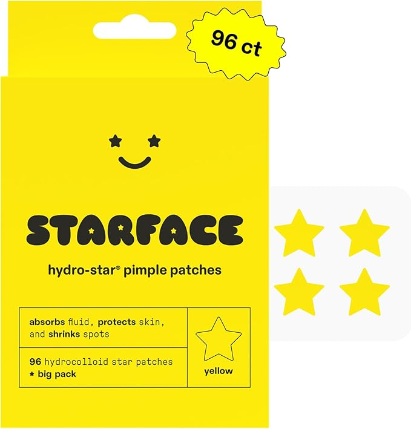
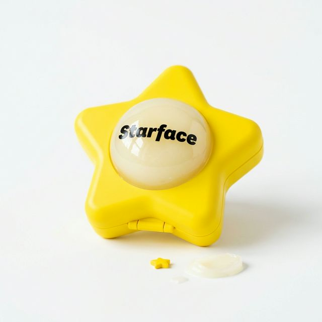

TRY THE FULL ROUTINE
The complete Starface skincare system — from cleansing to hydration.

STAR WASH
Foaming cleanser with Salicylic Acid. Unclogs pores and minimizes breakouts.

HYDRO-STAR
Hydrocolloid patches that absorb fluid and shrink spots in 6 hours.

HYDRO-STAR SA
Salicylic Acid patches for deeper blemishes. Unclogs from beneath the surface.

STAR CREAM
Oil-free moisturizer with Salicylic Acid. Hydrates while preventing future breakouts.

STAR BALM
Lip moisturizer with shea butter and coconut oil. Very Vanilla flavor.

THE WISHING STAR
Micro-dart dissolving patches for post-acne hyperpigmentation fading. Our new prototype — filling the post-blemish gap.